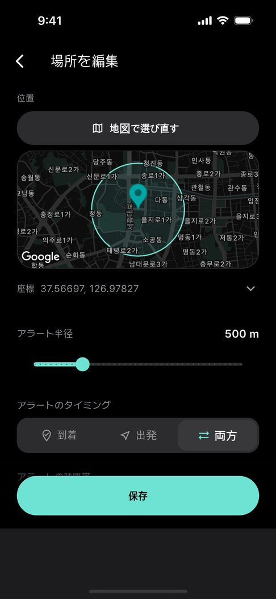
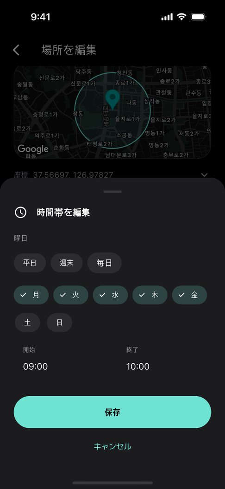
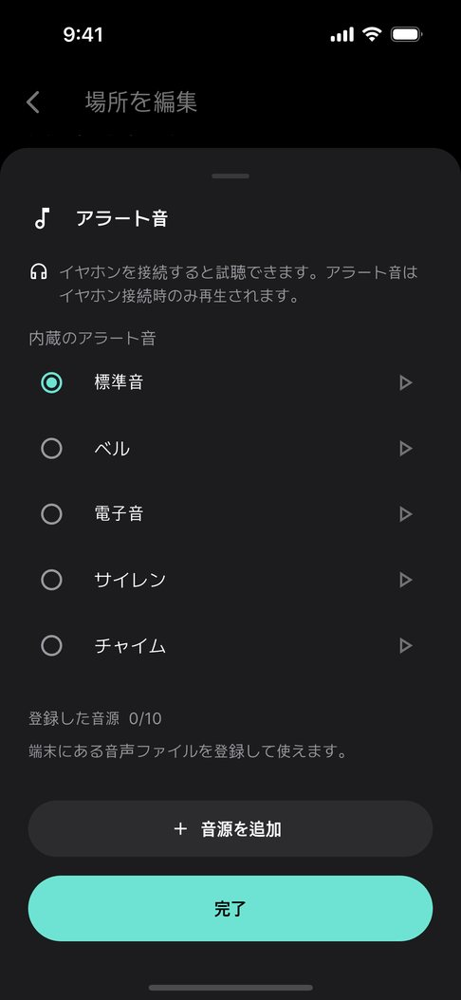
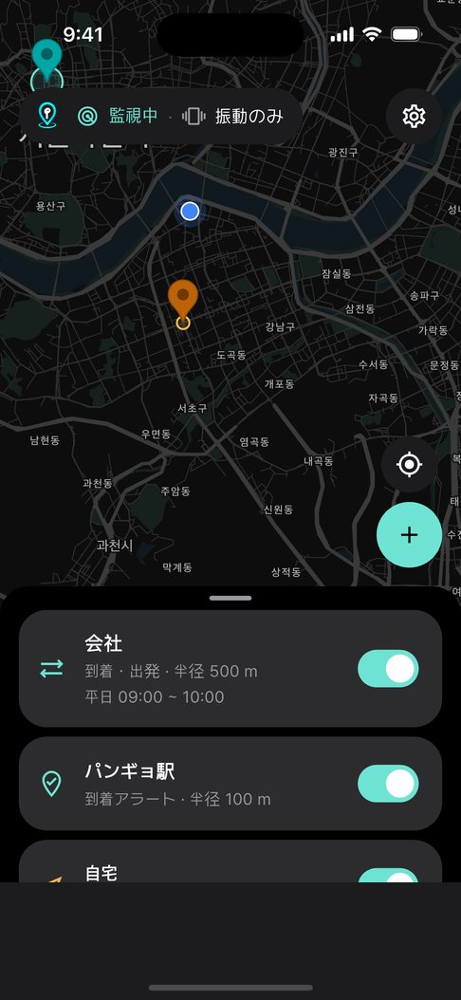

01
地図で場所を選んで、
半径を決めるだけ。
停留所・駅・会社、どこでも。円を見ながら 50m から 2km まで選べます。

バス · 電車 · 送迎バスの到着通知
到着したら振動で。イヤホンをしているときだけ音で。
スピーカーからは決して鳴らない位置通知。

到着した瞬間
半径に入るとすぐに振動。アプリを開いておかなくても、バックグラウンドで見守ります。
パンギョ駅へ移動中
送迎バス
会社や学校の送迎バスは、停留所の名前もアナウンスもないことがほとんど。窓の外を見ているうちに通り過ぎがちです。会社の正門、寮の前、空港の降車場所を一度だけ登録しておきましょう。
使い方
01
停留所・駅・会社、どこでも。円を見ながら 50m から 2km まで選べます。

02
場所ごとに通知のタイミングを設定。曜日と時間帯を決めれば、その時だけ鳴ります。

03
有線・USB-C・Bluetooth。接続を確認できたときだけ音を鳴らし、それ以外は振動だけ。

04
揺れるバスの中で、画面を見ずに親指で押せる大きさにしました。
機能
登録しておけばバックグラウンドで見守ります。位置情報は端末の外に出ません。

弱 · 中 · 強
50m から 2km まで
接続中の機器を許可リストで確認します。
曜日と時間帯を決めれば、その時だけ鳴ります。
よくある質問
はい。降りる停留所や駅を地図で登録しておけば、その半径に入った瞬間に振動で起こします。アプリを開いていなくても、画面が消えていても動作します。
いいえ。有線・USB-C・Bluetooth イヤホンの接続を確認してから音を鳴らします。接続されていなければ振動だけで、スピーカーからは鳴りません。
位置情報を常にオンにはしません。場所から遠いときは OS のジオフェンスに任せ、近づいたときだけ精密に確認します。
送られません。到着の判定はすべて端末の中で行い、登録した場所や記録も端末にだけ保存されます。会員登録もありません。
Galaxy Watch や Apple Watch でスマートフォンの通知を受け取る設定にすれば、ウォッチにも到着通知が届きます。アプリの設定 › ウォッチで通知を受け取る で手順を案内します。
無料です。広告が含まれますが、通知が鳴っている画面には広告を表示しません。